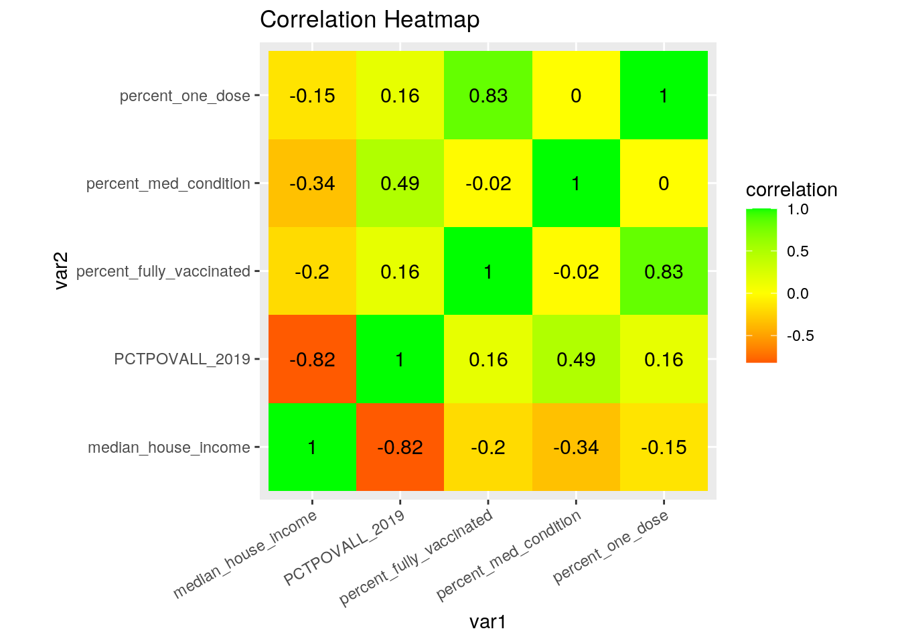
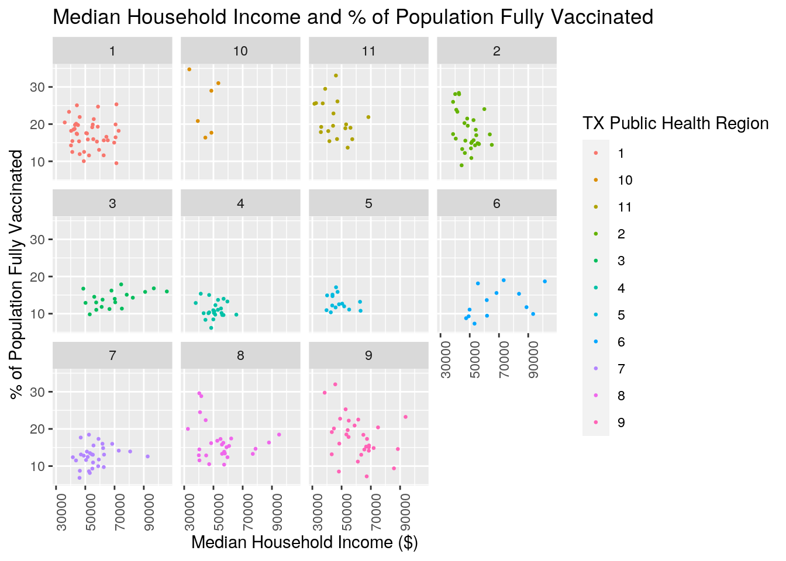
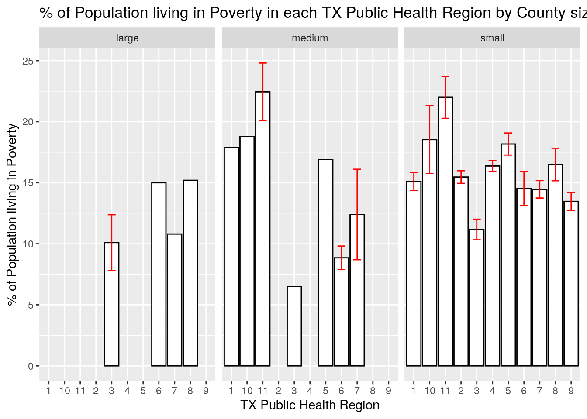

Four data sets were used for the exploratory data analysis project. The first data set includes COVID-19 vaccine data for each county within the state of Texas. Variables within the COVID-19 dataset include the number of people fully vaccinated, the number of people vaccinated with at least one dose, the total estimated population that is 16 years or older, the total estimated population that is 65 years or older, and the total number of individuals from ages 16 through 64 that have at least one chronic medical condition that puts them at risk for severe illness from the COVID-19 virus. Population estimates within this specific data set were grabbed from the 2019 Population Estimates from the U.S Census Bureau.
The second data set includes poverty estimates for the U.S, U.S states, and U.S counties from 2019. Variables within the dataset include the total number of people of all ages living in poverty and the percentage of people of all ages living in poverty for each state and county within the U.S. The data set also includes the estimated median household income in 2019.
The third and fourth data set used are much smaller in size compared to the first two. The third data set includes the 2019 total population for each county within the state of Texas. The fourth data set includes the names of Texas counties and their corresponding public health region within the state. Joining these sets of data intrigued me because I wanted to see if there is any association between COVID-19 vaccination, poverty levels, medical conditions, and public health regions.
library(tidyverse)
# upload the two datasets
covid_vaccine <- read_csv("covid19_vaccine_county_TX.csv")
poverty_county <- read_csv("poverty_county_TX.csv")
pop_county <- read_csv("2019_txpopest_county.csv")
pbh_region <- read_csv("tx_pbh_region.csv")
covid_vaccine # covid vaccine administered## # A tibble: 255 x 8
## county `Total Doses Al… `Vaccine Doses … `People Vaccina… `People Fully V…
## <chr> <dbl> <dbl> <dbl> <dbl>
## 1 Ander… 13970 9681 6723 3648
## 2 Andre… 5100 9056 5223 3934
## 3 Angel… 40500 29143 19054 10903
## 4 Arans… 4670 12396 7938 4726
## 5 Archer 2400 3819 2355 1591
## 6 Armst… 1700 837 516 332
## 7 Atasc… 13100 14728 9903 5284
## 8 Austin 6000 14393 10055 4992
## 9 Bailey 20395 3399 1960 1559
## 10 Bande… 3000 8281 5695 2863
## # … with 245 more rows, and 3 more variables: `Population, 16+` <dbl>,
## # `Population, 65+` <dbl>, `Population, 16-64\n Any Medical Condition` <dbl>poverty_county #poverty estimates in 2019## # A tibble: 254 x 4
## county POVALL_2019 PCTPOVALL_2019 MEDHHINC_2019
## <chr> <dbl> <dbl> <dbl>
## 1 Anderson 8702 19.8 48461
## 2 Andrews 1888 10.2 74918
## 3 Angelina 13131 15.6 51750
## 4 Aransas 4313 18.7 53085
## 5 Archer 877 10.3 63731
## 6 Armstrong 194 10.6 64424
## 7 Atascosa 7434 14.7 57309
## 8 Austin 3312 11.1 68311
## 9 Bailey 1093 15.9 46174
## 10 Bandera 2947 12.9 59604
## # … with 244 more rowspop_county # county population 2019## # A tibble: 254 x 2
## county july1_2019_pop_est
## <chr> <dbl>
## 1 Anderson 59025
## 2 Andrews 19279
## 3 Angelina 90989
## 4 Aransas 23710
## 5 Archer 9228
## 6 Armstrong 2001
## 7 Atascosa 50898
## 8 Austin 32067
## 9 Bailey 7113
## 10 Bandera 23129
## # … with 244 more rowspbh_region # public health regions for counties## # A tibble: 254 x 2
## county pbh_region
## <chr> <dbl>
## 1 Anderson 4
## 2 Andrews 9
## 3 Angelina 5
## 4 Aransas 11
## 5 Archer 2
## 6 Armstrong 1
## 7 Atascosa 8
## 8 Austin 6
## 9 Bailey 1
## 10 Bandera 8
## # … with 244 more rows# Joins
povcov <- full_join(poverty_county, covid_vaccine)
povcov <- full_join(povcov, pop_county)
povcov <- full_join(povcov, pbh_region)
povcov <- na.omit(povcov)
# Rename variables
povcov <- povcov %>% rename(median_house_income = MEDHHINC_2019,
fully_vacc = "People Fully Vaccinated", one_dose = "People Vaccinated with at least One Dose",
med_condition = "Population, 16-64
Any Medical Condition")The data sets were tidy as they initially were. A full_join() was done in 3 parts, with each full_join() adding a new data set to the main data set titled “povcov”. After having the full and complete data, all na’s were removed with na.omit(). Moreover, certain variables were renamed to make the process of calling up variables much easier. As mentioned previously, the datasets were tidy and therefore the process of using pivot_longer() was used during the Wrangling portion of the analysis.
#### WRANGLING ####
# mean table for numeric variables
mean_povcov <- povcov %>% summarize_at(2:12, mean, na.rm = T) %>%
pivot_longer(1:11, names_to = "Numeric Variables", values_to = "Mean")
# sd table for numeric variables
sd_povcov <- povcov %>% summarize_at(2:12, sd, na.rm = T) %>%
pivot_longer(1:11, names_to = "Numeric Variables", values_to = "sd")
# Right join mean and sd table for povcov
mean_sd_povcov <- right_join(mean_povcov, sd_povcov)
# Min table for numeric variables
min_povcov <- povcov %>% summarize_at(2:12, min, na.rm = T) %>%
pivot_longer(1:11, names_to = "Numeric Variables", values_to = "Min")
# Max table for numeric variables
max_povcov <- povcov %>% summarize_at(2:12, max, na.rm = T) %>%
pivot_longer(1:11, names_to = "Numeric Variables", values_to = "Max")
# Right join min and max table for povcov
min_max_povcov <- right_join(min_povcov, max_povcov)
# Median table for numeric variables
median_povcov <- povcov %>% summarize_at(2:12, median, na.rm = T) %>%
pivot_longer(1:11, names_to = "Numeric Variables", values_to = "Median")
# RIGHT JOIN FULL SUMMARY STATS FOR NUMERIC VARIABLES
num_var_sum_stat <- right_join(mean_sd_povcov, min_max_povcov) %>%
right_join(median_povcov)
num_var_sum_stat## # A tibble: 11 x 6
## `Numeric Variables` Mean sd Min Max Median
## <chr> <dbl> <dbl> <dbl> <dbl> <dbl>
## 1 POVALL_2019 15288. 58041. 12 701075 2644
## 2 PCTPOVALL_2019 15.4 5.05 4.8 32.5 14.8
## 3 median_house_income 54968. 13374. 31410 105763 52763
## 4 Total Doses Allocated 52412. 191025. 0 2130230 4900
## 5 Vaccine Doses Administered 44134. 159011. 46 1809800 6454
## 6 one_dose 28558. 104750. 32 1214159 4046
## 7 fully_vacc 16687. 57930. 14 641605 2733
## 8 Population, 16+ 88558. 314644. 129 3601939 14869
## 9 Population, 65+ 14744. 45878. 23 514167 3412
## 10 med_condition 32794. 118786. 50 1408024 5435
## 11 july1_2019_pop_est 114549. 408586. 96 4698655 19103# High to low of total fully vaccinated people pbh regions
povcov %>% group_by(pbh_region) %>% summarize(Total_fully_vaccinated = sum(fully_vacc)) %>%
arrange(desc(Total_fully_vaccinated))## # A tibble: 11 x 2
## pbh_region Total_fully_vaccinated
## <dbl> <dbl>
## 1 3 1144329
## 2 6 1026219
## 3 7 461148
## 4 8 455231
## 5 11 407558
## 6 10 157480
## 7 1 155061
## 8 4 133055
## 9 5 96760
## 10 9 94392
## 11 2 90522# High to low Average median household income for each pbh
# region
povcov %>% group_by(pbh_region) %>% summarize(Average_median_household_income = mean(median_house_income)) %>%
arrange(desc(Average_median_household_income))## # A tibble: 11 x 2
## pbh_region Average_median_household_income
## <dbl> <dbl>
## 1 3 69729.
## 2 6 68293.
## 3 9 60949.
## 4 7 56715.
## 5 8 55176.
## 6 1 52835.
## 7 4 50937.
## 8 2 49337.
## 9 5 48276.
## 10 11 45506.
## 11 10 44640.# Mutate county population size as a categorical (small,
# medium, large)
povcov <- povcov %>% mutate(county_pop_size_cat = ifelse(july1_2019_pop_est >
999999, "large", ifelse(july1_2019_pop_est <= 999999 & 250000 <=
july1_2019_pop_est, "medium", "small")))
# Count distinct entries in categorical variable
povcov %>% summarize_if(is.character, n_distinct, na.rm = T)## # A tibble: 1 x 2
## county county_pop_size_cat
## <int> <int>
## 1 253 3# count how many counties for each population category
# (small, medium, large)
povcov %>% group_by(county_pop_size_cat) %>% summarize(number_of_counties = n())## # A tibble: 3 x 2
## county_pop_size_cat number_of_counties
## <chr> <int>
## 1 large 6
## 2 medium 15
## 3 small 232### MUTATE: Percentage of population fully vaccinated for each
### county given the 2019 population estimate
povcov <- povcov %>% mutate(percent_fully_vaccinated = fully_vacc/july1_2019_pop_est *
100)
### MUTATE: Percentage of population with at least one dose for
### each county given the 2019 pop. estimate
povcov <- povcov %>% mutate(percent_one_dose = one_dose/july1_2019_pop_est *
100)
### MUTATE: Percentage of county population with any medical
### condition from ages 16-64
povcov <- povcov %>% mutate(percent_med_condition = med_condition/july1_2019_pop_est *
100)
# County with the highest percentage of fully vaccinated and
# the region it's located
povcov %>% select(county, percent_fully_vaccinated, pbh_region) %>%
filter(percent_fully_vaccinated == max(percent_fully_vaccinated,
na.rm = T))## # A tibble: 1 x 3
## county percent_fully_vaccinated pbh_region
## <chr> <dbl> <dbl>
## 1 Presidio 34.7 10# County with the lowest percentage of fully vaccinated and
# the region it's located
povcov %>% select(county, percent_fully_vaccinated, pbh_region) %>%
filter(percent_fully_vaccinated == min(percent_fully_vaccinated,
na.rm = T))## # A tibble: 1 x 3
## county percent_fully_vaccinated pbh_region
## <chr> <dbl> <dbl>
## 1 Anderson 6.18 4# percentage of pbh region that are fully vaccinated
povcov %>% group_by(pbh_region) %>% summarize(percent_full_vacc_region = sum(fully_vacc)/sum(july1_2019_pop_est,
na.rm = T) * 100) %>% arrange(desc(percent_full_vacc_region))## # A tibble: 11 x 2
## pbh_region percent_full_vacc_region
## <dbl> <dbl>
## 1 10 18.0
## 2 1 17.8
## 3 11 17.8
## 4 2 16.3
## 5 8 15.1
## 6 3 14.4
## 7 9 14.3
## 8 6 14.2
## 9 7 12.9
## 10 5 12.4
## 11 4 11.4# percentage people in pbh region that have received at least
# 1 vaccine dose
povcov %>% group_by(pbh_region) %>% summarize(percent_one_dose_region = sum(one_dose)/sum(july1_2019_pop_est,
na.rm = T) * 100) %>% arrange(desc(percent_one_dose_region))## # A tibble: 11 x 2
## pbh_region percent_one_dose_region
## <dbl> <dbl>
## 1 10 30.6
## 2 11 29.6
## 3 1 26.1
## 4 6 25.6
## 5 8 25.1
## 6 7 24.3
## 7 3 24.2
## 8 2 23.7
## 9 9 21.9
## 10 5 20.8
## 11 4 18.4# percentage of people of all ages living in poverty for each
# pbh region
povcov %>% group_by(pbh_region) %>% summarize(pct_poverty = sum(POVALL_2019)/sum(july1_2019_pop_est,
na.rm = T) * 100) %>% arrange(desc(pct_poverty))## # A tibble: 11 x 2
## pbh_region pct_poverty
## <dbl> <dbl>
## 1 11 23.0
## 2 10 18.2
## 3 5 15.9
## 4 1 15.2
## 5 4 15.0
## 6 8 14.1
## 7 2 13.6
## 8 6 12.9
## 9 9 12.1
## 10 7 11.5
## 11 3 10.4# Showing counties with the highest and lowest median
# household income and their percentage of population fully
# vaccinated and the estimated percent of people of all ages
# in poverty 2019 and pbh region
povcov %>% mutate(percent_fully_vaccinated = fully_vacc/july1_2019_pop_est *
100) %>% select(county, percent_fully_vaccinated, median_house_income,
PCTPOVALL_2019, pbh_region) %>% filter(median_house_income ==
max(median_house_income, na.rm = T) | median_house_income ==
min(median_house_income, na.rm = T))## # A tibble: 2 x 5
## county percent_fully_vaccinated median_house_inco… PCTPOVALL_2019 pbh_region
## <chr> <dbl> <dbl> <dbl> <dbl>
## 1 Brooks 25.5 31410 29.6 11
## 2 Rockwall 16.0 105763 4.8 3The first portion of the Wrangling section deals with calculating the mean, standard deviation, minimum, maximum, and median for all the numeric variables found in the data set of povcov using summarize_at(). In this section, right_join() and pivot_longer() functions are also used to create a table that illustrates the summary statistics for the numeric variables. From the gathered data, the minimum and maximum percentage of people living in poverty of all ages in a county is 4.8% and 32.5%, respectively.
Using other core dplyr functions such as mutate(), group_by(), summarize(), filter(), select(), and arrange(), we found that the public health region with the highest median household income is region 3 (Dallas-Forth Worth area), and the lowest is region 10 (El Paso area). Moreover, the county with the highest percentage of fully vaccinated individuals is Presidio county in region 10 with a percentage of 34.7%. Region 10 holds the greatest percentage of fully vaccinated individuals, 18.0%, while region 4 holds the lowest percentage with 11.4%. Finally, region 11 (South Texas) has the greatest percentage of people of all ages living in poverty with a percentage of 23.0%.
# create new table with only numerical columns
povcov_num <- povcov %>% select(PCTPOVALL_2019, median_house_income,
percent_fully_vaccinated, percent_one_dose, percent_med_condition)
cormat_povcov <- povcov_num %>% select_if(is.numeric) %>% cor(use = "pair")
tidy_cormat_povcov <- cormat_povcov %>% as.data.frame %>% rownames_to_column("var1") %>%
pivot_longer(-1, names_to = "var2", values_to = "correlation")
tidy_cormat_povcov %>% ggplot(aes(var1, var2, fill = correlation)) +
geom_tile() + scale_fill_gradient2(low = "red", mid = "yellow",
high = "green") + geom_text(aes(label = round(correlation,
2)), color = "black", size = 4) + theme(axis.text.x = element_text(angle = 30,
hjust = 1)) + coord_fixed() + ggtitle("Correlation Heatmap")
The heatmap above illustrates the correlations between some of the numeric variables found within the povcov data set.Green tiles indicate a positive correlation whereas red indicates a negative correlation. We can see that there is a negative correlation of -0.82 between the estimated percent of people of all ages in poverty and median household income. This correlation makes sense because as household income increases, poverty should decrease.There is also a slight negative correlation of -0.34 between median household income and the percentage of the population with a chronic medical condition between the ages of 16-64. This correlation is interesting because although slight, it may suggest that as median household income decreases, the percentage of chronic medical conditions within a population increases. Furthermore, there is a slight positive correlation of 0.49 between the percentage of poverty and the percentage of chronic medical conditions within a given county. Interestingly, there is a negative correlation of -0.2 between median household income and the percentage of fully COVID-19 vaccinated individuals.
ggplot(data = povcov) + geom_point(mapping = aes(x = median_house_income,
y = percent_fully_vaccinated, color = as.character(pbh_region)),
size = 0.5) + facet_wrap(~as.character(pbh_region)) + labs(title = "Median Household Income and % of Population Fully Vaccinated",
x = "Median Household Income ($)", y = "% of Population Fully Vaccinated",
color = "TX Public Health Region") + theme(axis.text.x = element_text(angle = 90))
The plots above illustrates the relationship between median household income and the percentage of the population that is fully COVID-19 vaccinated for each county. Each point, which represents a county, is colored by the corresponding public health region it pertains to. To better see the points for each region, the plot was stratified by public health regions. As previously mentioned in the correlation heatmap, there is a slight negative correlation of -0.2 between median household income and the percentage of fully vaccinated individuals. It is difficult to assess whether there is a correlation between the two variables for each region. However, just by looking at the scatter plots, there seems to be a slight downwards trend in region 11, with median household income increasing and the percentage of fully vaccinated individuals decreasing. In region 3, however, none of the counties surpass having 20% of their population fully vaccinated. Instead, it appears that there is no obvious change in percentage of fully vaccinated populations as median household income increases.
ggplot(povcov, aes(x = as.character(pbh_region), y = PCTPOVALL_2019)) +
geom_bar(stat = "summary", color = "black", fill = "white") +
geom_errorbar(stat = "summary", width = 0.5, color = "red") +
facet_wrap(~county_pop_size_cat) + labs(title = "% of Population living in Poverty in each TX Public Health Region by County size",
x = "TX Public Health Region", y = "% of Population living in Poverty")
The graph above illustrates the percentage of the population for each region living in poverty, stratified by categorical county size of large, medium, and small. Regions 3, 6, 7, and 8 are the only regions that contain large sized counties. Within the large county group, there is great variability of poverty percentage within the large counties found in region 3. However, region 3, despite the county sizes, exhibit the lowest percentage of poverty within the population.Region 3 encompasses the Dallas-Forth Worth area. The county with the greatest percentage of population living in poverty is region 11. There seems to be no difference between the smaller counties versus the medium counties in terms of mean percentage of poverty. Region 11 is the southern-most portion of Texas which includes cities like McAllen, Laredo, and Brownsville.